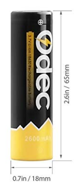
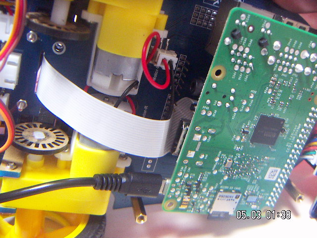
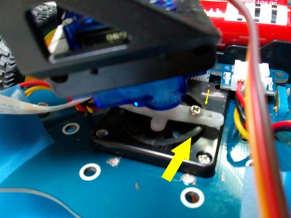
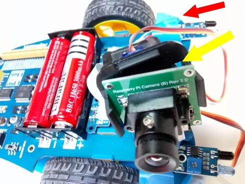
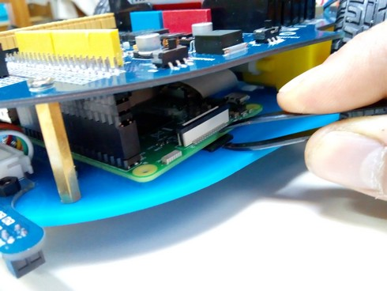
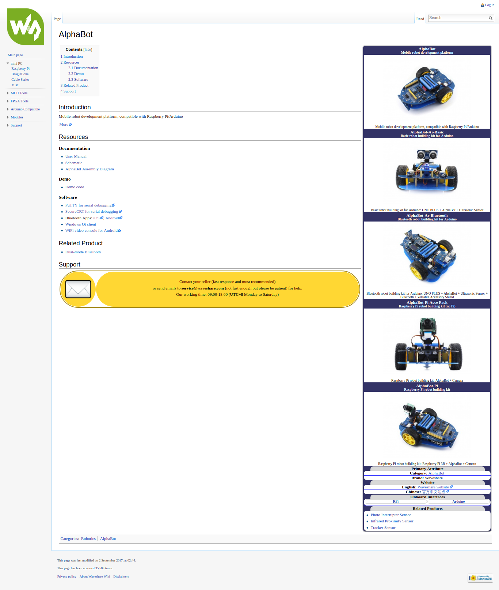
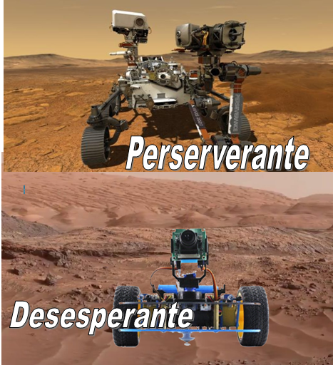

Desventajas
Es importante que las conozcas:
Primera desventaja: CUIDADO CON LAS PILAS 18650
No son tan peligrosa como las pilas de Plutonio-238, pero tienen sus peligros. Se pueden encontrar en tiendas online con cargador incluido. (ojo,hay dos versiones, elegir la de 65mm) pero hay que tener precauciones.
No te fies de las muy baratas, pues hay algunas que son falsas..
- OJO ESTAS PILAS SON PELIGROSAS SI SE CORTOCIRCUITAN O NO SE RESPETA LA POLARIDAD, PUEDEN LLEGAR INCLUSO A EXPLOTAR. Y para complicarlo, no se ve bien (los símbolos + y - de las 18650 soy muy pequeños) y en Alphabot hay una contradicción, los símbolos de fuera en la placa no coinciden con los símbolos de dentro grabados en el portapilas ¿cuales son los verdaderos?: Los de fuera. Para que quede claro aquí tienes un dibujo:
- Algunas están protegidas, pero lo normal es que no. Aquí para ver si la pila es protegida o no.
- Curiosamente estas baterías forman parte de las baterías de los portátiles, pero manipularlas tiene riesgos ver

Segunda desventaja: No se puede utilizar la fuente de alimentación de la Raspberry con el chasis de abajo montado
Esto es importante mientras estamos programando este robot, hacer pruebas y depuraciones sin utilizar las pilas (son un engorro, sólo hay que ponerlas cuando ya lo tenemos todo depurado).
Se puede utilizar la fuente de alimentación de la Raspberry (output 3.000 mA) pero para conectarlo hay que quitar la placa de abajo

Y por supuesto levantar el robot para que no salga disparado conectado con el cable, que los motores trabajen en vacío y entonces sí que la fuente de alimentación lo puede soportar:

Tercera desventaja: FALOS EN EL DISEÑO:
- Del brazo de robot, el pie no se ajusta bien a la placa y tampoco a la cámara web (en las fotos las flechas amarillas) Ver Chapuzas nº 1, 2 y 3 de DIY.
 
El brazo robot está situado demasiado hacia delante, lo que dificulta la posibilidad de colocar un sensor de Ultrasonidos en la parte delantera, esto lo hablaremos en este punto.
El acceso a la tarjeta microSD es difícil, una manera es utilizando unas pinzas de depilar (ver foto) o desmontando la tapa inferior.

- Otro defecto es la colocación del siguelíneas atrás del sentido de la marcha, esto lo veremos en el capítulo correspondiente y lo solucionaremos haciendo que vaya hacia atrás, pero claro, la cámara enfoca a la parte trasera y pierde su gracia.
Cuarta desventaja: La documentación en Internet no es muy amplia y buena.
- Al menos hay una wiki más o menos útil: https://www.waveshare.com/wiki/AlphaBot pero no encontramos ejemplos de uso en la red

En resumen
Las desventajas de diseño se sufren en el momento de montarlo y las baterías hay que tener cuidado con respetar la polaridad, pero la desventaja más importante es como hemos visto anteriormente, no se puede acceder a la alimentación por USB con la tapa inferior montada luego tenemos dos opciones:
- Alimentar Alphabot con las pilas. (única opción cuando está en movimiento).
- Desmontar la tapa inferior y alimentarlo por USB. Si elegimos esta opción hay que dejar las ruedas en alto para que los motores trabajen en vacío.
Como el método de trabajo es programar (quitar tapa, pues las baterías no duran todo el rato que se está en la programación) y probar (poner tapa pues está en movimiento) este kit puede resultar...


Alphabot por varios autores bajo licencia Creative Commons Reconocimiento-NoComercial-CompartirIgual 4.0 Internacional License.